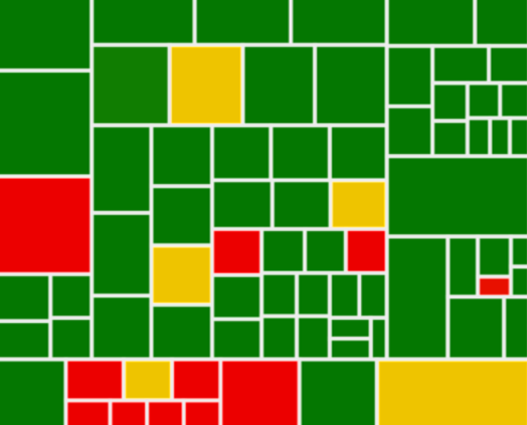

CO559: Software Development
Testing theory
Tomas Petricek
email: t.petricek@kent.ac.uk
twitter: @tomaspetricek
office: S129A
{kind=link}
Cultures of programming and testing
Cultures of programming
Different ways of thinking about programming
Hacker - hands-on practice learned through tinkering
Mathematical - formal activity relying on proofs
Managerial - organized factory-like production process
Engineering - relying on good tools and practices

Hacker culture
Program checkout comprising testing
and debugging
Early days of testing, still dominant in debugging

Mathematical culture
Program testing can be used to show the presence of bugs, but never to show their absence
(Dijkstra, 1970)

Managerial culture
Testing as a part of a structured development process
From Waterfall to
Agile methods

Engineering culture
Tools and good practices for testing
What to test? How to test? How can tools help?
Managerial take on testing
Role of testing

Verification
- Software conforms to specification
- Are we building it right?
- Defect testing to check for bugs
Validation
- Software does what user wants
- Are we building the right thing?
- Validation testing to check requirements

Testing as part of a development lifecycle
Many different approaches!
When should you
design tests?
When should you
start testing?
Waterfall (1950s)
Testing happens
after coding
Verification and validation of a done system
Errors can get expensive

V-Model (1990s)
Matching development and testing phases
Plan testing in advance during development
V-Model
Matching development and test phases
Requirements plan for Acceptance test
System design plan for System test
Architecture plan for Integration test
Coding plan for Unit tests
Agile critique

V Model does not work
- Too simple management view
- Fails to respond to change
- Only looks for what is expected
Testing in Agile methods
- Unit testing as engineering tool
- Acceptance tests derived from user stories
- Test-driven development method
Test-driven development (TDD)

TDD in practice
- Write tests to capture requirements
- Implement code satisfying tests
- Test automatically and frequently
Development process
- Structured approach to development
- Mostly focused on engineering side
- Red-green-refactor method
Engineering & mathematical take on testing
Questions about testing
How do we know our
tests are good?
How to design good tests?
What tools and theories can help us?
White and black box testing

Black-box (functional)
- Without looking at code
- Tests based only on specification
- Focuses on representative inputs
White-box (structural)
- Access to code structure
- Test based on program logic
- Cover as much code as possible
Equivalence class partitioning

Equivalence classes
- Subset of inputs that are equivalent
- Program works the same way
- Code follows the same path
Designing tests
- Identify ranges of values for
which the behaviour is the same - Pick one sample input from each class
Demo: Equivalence class partitioning

Boundary value analysis
Heuristic for finding good partition representatives
Use boundary values!
Code coverage
White-box testing metric
- How much code is run by tests?
- The more the better!
- Still no absolute guarantee!
Coverage metrics
- Statement coverage
- What individual statements are run
- Decision coverage
- What branches of conditionals
Summary
Testing theory
Cultures of programming
Hacker culture, mathematical culture
Engineering culture, managerial culture
Managerial take
Testing as part of a development process
Waterfall, V-model, agile methods
Mathematical and engineering take
White box vs. black box methods
Equivalence class partitioning etc.
CO559: Testing tehory
What you should remember from this lecture
- Validation vs. verification
- V-model, Waterfall and TDD
- Equivalence classes & boundary analysis
Tomas Petricek
t.petricek@kent.ac.uk | @tomaspetricek
References
Online resources